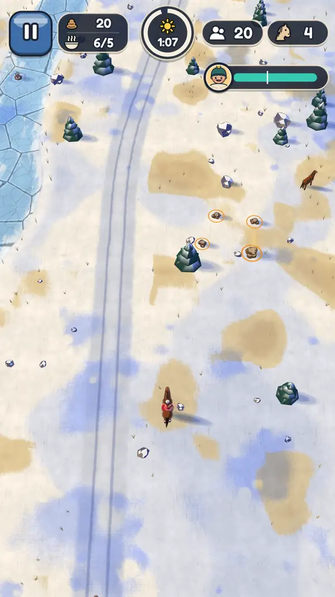
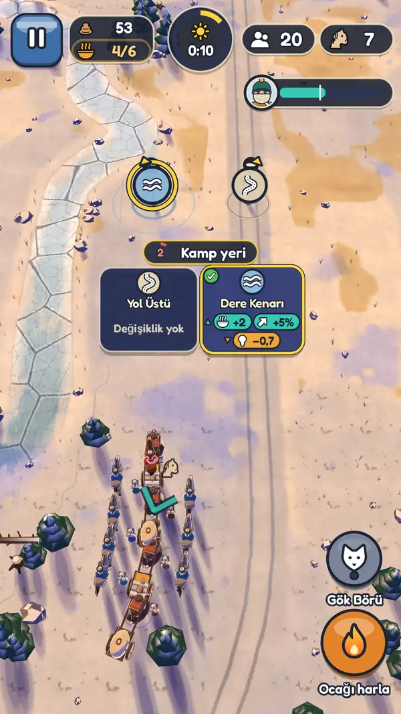
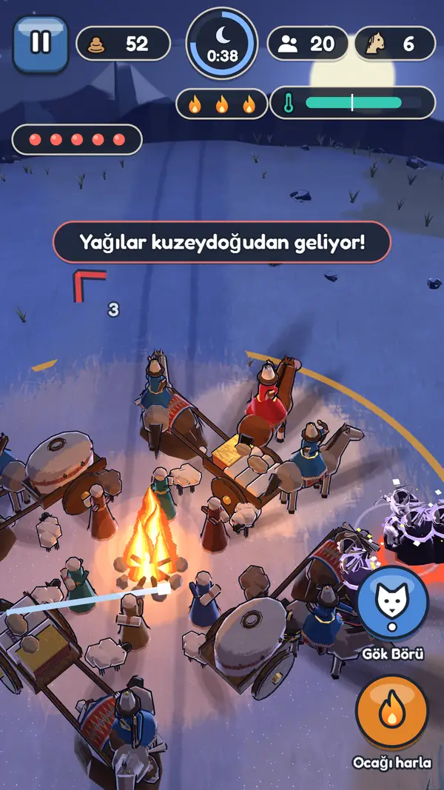
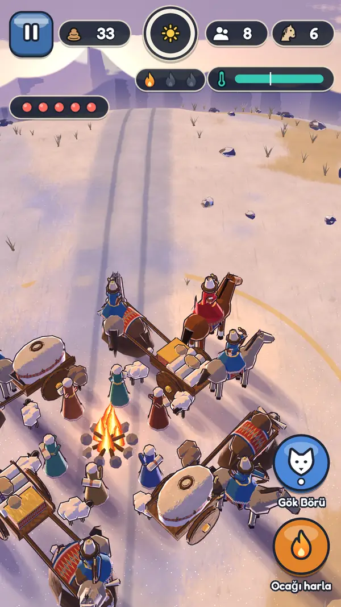
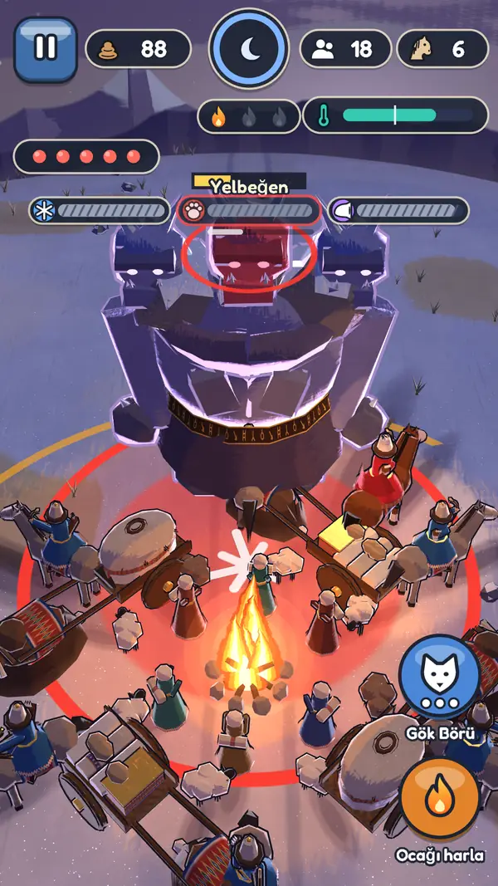

Dedem Korkut der ki: kopuzumu alayım, size dağın içinden çıkıp Ötüken'e yürüyen bir obayı anlatayım. Kimse geride kalmadı; ben de anlatırken kimseyi geride bırakmayacağım.
Ulu Kağan dağınık Türk boylarını Ötüken'deki toyuna çağırır. Çağrıyı taşıyan bir bey değil, sıradan bir askerdir: küçük bir birlikle karlı geçitlerde, bozkırda ve karanlık ormanda dağınık aileleri bulur, onları Kağan'a sağ salim ulaştırır.
Bu sayfa hem bir okuma parçası hem de oyunun kısa bir tanıtımıdır. Aşağıda kahramanı seç ve ona bir ad ver; anlatıdaki ad her yerde değişir. Altı çizili sözcüklere dokununca kısa açıklamaları açılır.
Ozanın anlattığı
Hikâye
Prologla başlar, üç boyla sürer, Ötüken'deki toyla biter. Her bölümde bir boy vardır ve o boyun bir derdi; dert, bölümün sonunda karşına çıkan büyük düşmandır.
Prolog · Demir Dağ ve Vadi
Ulağın oku
Anlatıya göre bir , Ergenekon dedikleri dar vadide dört yüz yıl yaşamış. Çevresi dağ duvarıydı; içi sıcak, dışı bilinmezdi. Sonraki anlatıcılar orayı kısaca Demir Dağ ve Vadi diye anar.
Bir sabah dağın öte yanından bir ok aşıp vadiye düştü. Onu Ulu 'ın ulağı fırlatmıştı; bu bir çağrı okuydu. Demirciler “Çağrıyı duyduk” dedi. Körükler uğuldadı, ateş yükseldi, Demir Dağ eriyip aktı.
Kapı açılınca gökyüzü kızıl yandı. O ışık çok uzaktan görüldü derler. Aç da, 'in karanlıktan gelen yaratıklarını da obanın üstüne çekti. Halk ikiye bölündü: kalanlar ve gidenler. Yaşlı Ocak Ata vadide kalmayı seçti; ana ateşten bir alıp demir kor kabına koydu ve gidenlere verdi: “Ben vadinin sıcağını sevdim. Siz yolun soğuğunu sevin.”
Kapıda ulak bekliyordu; yüzü başlığıyla örtülü, atı terli. Obanın genç askerlerine baktı, birini seçti ve eline Kağan'ın oklarıyla dolu bir verdi. Yolda bulunacak her bir ok düşüyordu.
Seçilen ne bey ne de bir kağan soyundandı. Yayını iyi çeken, atını iyi süren sıradan bir askerdi. Yanında birkaç atlı, arkasında , kağnıda kor kabı vardı. Yol uzundu.
“Bu yük benim değil, hepimizin; ben yalnız önde yürüyorum.” — Asker
Birinci bölüm · Altay'ın Karı
Kar Boyu ve Yelbeğen
Erken erişimde oynanır9 konak
Altay'ın karı kırk gün yağar, kırk gün bakar. Rüzgâr yalar geçer; kor yaşar. Gündüz kervan yürür, kahraman çevrede yakacak toplar, yabani atları çeker. Akşam kağnılar halka olur, gece ocağın ışığı halkı korur.
Karın altında dağınık ocaklar var derler. Kar Boyu'nun obaları birbirinden habersiz, korku içinde tek tek donuyordu. Donmuş Dere'de boyun öncü ailesi bulundu; kervana katıldılar ve kor kabının ışığında ısındılar.
Rüzgâr Sırtı'nı geçince bir tepede gök renkli bir kurt belirdi. hiç konuşmadı; yalnız baktı ve dar geçidi gösterdi. O günden sonra gece bastırınca ruh kurtları obanın yanında koştu.
Geçidi çok başlı bir dev tutuyordu: Yelbeğen. Her başı ayrı bir yöne bakar; hiçbiri ötekini görmez. Dağınıklığın ta kendisiydi. Dev kar olup dağılınca geçit açıldı. Kar Boyu ocaklarını tüttürdü, közlerini kor kabına kattı. Boyun yaşlısı Kağan'ın okunu kuşağına soktu; onu Ötüken'de sadağa koyacaktı.
Boyun derdi: Yelbeğen
Bölümün dokuzuncu konağında, gece gelir. Üç baş sırayla saldırır ve saldırının ineceği yer önceden yerde parlar. Saldırısını indiren baş bir süre açık kalır; altın halkayı gördüğün an vur. Üç baş da düşünce dev dağılır.
İkinci bölüm · Yılkı Bozkırı
Yılkı Boyu ve Tepegöz
Güncellemeyle gelir9 konak
Dağ geride kaldı; önde ucu bucağı olmayan bozkır uzanıyordu. Yılkı sürüleri toz kaldırır; her at bir yoldaş, her yoldaş bir ok. Oba artık kalabalıktı ve kalabalık hem güçtür hem yüktür. Terk edilmiş kışlaklarda kalmış aileler bulundu, başka bir göçebe obayla ortak ateş yakıldı.
Yılkı Boyu sürüleriyle yaşar. Ama bozkırda tek bir göz açılmıştı; sürüleri sayıyor, saydığını haraç istiyordu. Haraç yolunda adsız bir yağı beyinin adamları “yükünün yarısını ver” dedi. Kam Ece o gece rüyasında tek bir göz gördü.
Tepegöz toza karışınca haraç kapısı kapandı. Yılkı Boyu sürüleriyle yürüyüşe katıldı, közünü ocağa kattı. Oba artık küçük değildi. Bir sabah ufukta ormanlı dağlar mavi mavi göründü.
Boyun derdi: Tepegöz
Tek gözün baktığı yön kalkanlıdır; yanından ve arkasından vurmak gerekir. Bu bölümde ordu da büyür: atlı okçular, çift kılıçlı atlılar ve emri senin verdiğin taktikler.
Üçüncü bölüm · Ötüken'in Eşiği
Yış Boyu ve Erlik'in Elçisi
Güncellemeyle gelir9 konak
Son yol en uzun yoldur derler; çünkü varmaya yaklaştıkça insan geri bakar. Kıvılcım “Vadiye dönsek?” diye sordu. Bazı aileler gerçekten dönmek istedi; kimi ikna edildi, kimiyle vedalaşıldı.
dibinde Yış Boyu bekliyordu. Kağan'ın çağrısını yıllardır bekleyen dağınık ocaklardı bunlar ve umutlarını yitirmek üzereydiler. Rüzgâr fısıldadı: “Kimse gelmedi, kimse gelmeyecek.” Bu fısıltının sahibi Erlik'in Elçisi'ydi.
Orhun geçidinde Gök Börü son kez yolu gösterdi. Ata taşlarının dizildiği yolda biri “Bizden önce de buradan geçenler olmuş” dedi. Ufukta Kağan'ın ocağının ışığı görünüyordu. Elçi dağılınca fısıltı sustu; Yış Boyu közünü ocağa kattı ve Ötüken'in kapısı açıldı.
Boyun derdi: Erlik'in Elçisi
Elçi ışığa dayanıklıdır ve ocağı söndürmeye gelir. Ona karşı korun kendisi gerekir: her boyun közü ocakta birlikte yanar.
Son · Ötüken
Ötüken'de toy
Güncellemeyle gelir
Sabah ışık 'in ormanlı dağına düştü; Orhun gümüş gibi aktı. Kağan'ın otağının önünde ocaklar tütüyordu: dört yana dağılmış boylar gelmişti. Kağan'ın başka ulakları da yola çıkmış derler; kimi doğudan, kimi batıdan, kimi kuzeyden, kimi güneyden geldi. Hiçbiri geride kalmamıştı.
Her boy, yolda kendisine iletilen oku Kağan'ın sadağına koydu ve közünü Kağan'ın ocağına kattı. Usta Tunç demir ocak halkasını yerine oturttu, Kıvılcım ilk tezeği attı. Tek ok kırılır, dolu sadak kırılmaz derler. Korlar tek ocakta birleşti; böyle kuruldu.
Ulu Kağan'ın yüzü ocağın ışığında gölgede kaldı. Tek bir cümle söyledi, sonra çağrıyı taşıyan askeri yanına çağırdı. Sıradan bir asker o gün oldu: Kağan ona bir yurdun yönetimini verdi. Kor bu kez yol için değil, hepimiz için yandı.
Dedem Korkut der ki: yol biter, ocak kalır. ozan
Sadak dolsun
Her dokunuşta bir boy Kağan'a varır: okunu sadağa koyar, közünü ocağa katar. Sekiz ok, sekiz kor, tek ocak.
Demir Dağ obası çağrı okunu sadağa koydu, közünü ocağa kattı.
Sadak dolunca Ulu Kağan konuşur.
Asker · çağrının taşıyıcısı
Altay'dan Ötüken'e
Yol haritası
Yol batıda Altay'ın karlı geçitlerinden başlar, bozkırı aşar ve doğuda Ötüken'in ormanlı dağlarında biter. Bir durağa dokun, o bölümün özeti açılsın.
Prolog
Demir Dağ ve Vadi
Ulağın oku vadiye düşer, demirciler dağı eritir. Ocak Ata koru verir, ulak Kağan'ın oklarını sıradan bir askere uzatır. Kervan yola çıkar.
Boy
Demir Dağ obası
Dert
Kızıl gökyüzünün çektiği yağılar
Durum
Erken erişimde
Bir gün, bir gece
Oyun nasıl oynanır
Yol konak ilerler. Bir konak bir gündüz ve bir geceden oluşur, yaklaşık iki dakika sürer. Gündüz yolculuk ve toplama, akşam kamp, gece savunma. Kaybedersen yalnız o konak yeniden oynanır.
Döngünün bir evresine dokun ya da döngüyü baştan sona izle. Her evrenin ayrıntısı aşağıda.

Gündüz: kervan yürür
Kervan kendi yolunda ilerler; sen atınla çevresinde dolaşırsın.
Topla: tezek, odun ve yiyecek. Topladığın şey ancak kervana teslim edince sayılır; kervana yaklaşman yeter.
Kement: yabani bir ata yaklaş, kement kendiliğinden atılır. At seni izler, kervana varınca atlı asker olur.
Aile işleri: Yılkıcı Manas atları getirir, Kıvılcım tezek kümelerini boşaltır, Gökçe iz sürüp avlanır. Tek dokunuşla Gönder, istersen Geri çağır.
Dörtnala: sağ alttaki düğme kısa bir hız verir. Soluk çabuk biter, birkaç saniyede dolar; ama av ve atlar ürker.
Hedefler: her günün küçük, isteğe bağlı hedefleri vardır; ödülü kor ve tamgadır. Yol üstünde arada bir karar kartı çıkar.
Akşam yaklaşınca kervan borusu çalar: geceden önce kervana dön.

Gün batımı: kamp kurulur
Kamp yeri: kervan yürürken üç kart çıkar: Yol Üstü, dere kenarı, kayalık, orman kenarı ya da tepe. Her kartta ne kazandırdığı ve neye mal olduğu yazar. Dokunmazsan kervan yol üstünde durur.
Kağnı halkası: kağnılar ocağın çevresinde halka olur.
Keçe çadır: çadır bir sığınaktır, ocağı ısıtır; ama halkayı büyütür, yakıtı artırır ve kağnı yükünden yer tutar.
Karar sana ağır gelirse Ayarlar'da “Kam seçsin” diyebilirsin.

Gece: ocak yanar
Isı ve yakıt: ocak tezekle ve odunla yanar. Halkın sıcaklığı düşerse askerler yavaşlar, soğuk uzarsa halk azalır.
Ocağı harla: ışık büyür, ısı artar, ama yakıt üç kat hızlı tükenir.
Işık kuralı: askerler yalnız ocağın ışığındaki yağıyı vurur. Yağılar hangi yönden gelecekse önceden uyarı çıkar.
Geri Atış: düşmandan uzaklaşırken geriye attığın ok iki kat vurur ve kalkanı deler.
Gök Börü: gece ruh kurtlarını çağırırsın; yağıları dağıtırlar.
Birlik: atlı askerler ışıkta savunur. Güncellemelerle okçular, çift kılıçlı atlılar ve dört taktik gelir: Çember, Vur-çekil, Yarma, Kıskaç.

Şafak: konak biter
Kalan yağılar dağılıp kaybolur; kimse kan dökmez, düşen düşman dağılır.
Konak sonu: bir ile üç arası Alev ve kor kazanırsın. Kor, Otağ'da yeni yetenekler açar.
Halk sıfıra inerse ozan araya girer: “Hayır, öyle olmadı.” O günü baştan anlatır; yalnız o konak yeniden oynanır.

Bölüm sonu ve akın
Bölüm sonu: dokuzuncu konağın gecesi boyun derdi gelir. Bölüm 1'de Yelbeğen: saldırının ineceği yeri yerde gör, kaç, sonra açılan başı vur.
Akıngüncellemeyle gelir: kervan yürürken bir birlikle yağı kampına baskın yaparsın. Amaç iki tanedir: esir aileleri çıkarmak ve yağıyı yıpratıp yolu açmak. Kurtarılan aileler obaya katılır.
Ordugüncellemeyle gelir: obaya katılan halkı birliklere sen dağıtırsın; emri sen verirsin, birlikler uygular.
Yolda geçen sözler
Sözlük
Her sözcüğün kısa anlamı burada. “Oyunda” düğmesi o sözün oyundaki karşılığını açar.
Kağan
Boyların başı, hükümdar. Bu anlatıda adı anılmayan Ulu Kağan, dağınık boyları Ötüken'e çağırır.
Oyunda: Ulu Kağan yalnız sonda, ocağın ışığında bir gölge olarak görünür.
El
İl; boyların birliğiyle kurulan devlet. Eldeki “el” ile karışmasın diye büyük harfle yazılır.
Oyunda: sonda korlar tek ocakta birleşince El kurulur.
Toy
Büyük toplantı ve şölen. Boylar Kağan'ın toyunda bir araya gelir.
Oyunda: yolun sonu Ötüken'deki toydur.
Sadak
Okların taşındığı kılıf, okluk.
Oyunda: her boy Kağan'a varınca kendisine iletilen oku sadağa koyar.
Kor
Ateşten kalan, için için yanan köz. Oba, vadideki ana ateşten aldığı koru demir bir kor kabında taşır.
Oyunda: kor aynı zamanda konak sonunda kazanılan ödüldür; Otağ'da yetenek açar.
Ocak
Kampın ortasındaki ateş; ısıyı ve ışığı o verir.
Oyunda: ocak tezekle ve odunla yanar; “Ocağı harla” ışığı büyütür, yakıtı üç kat yer.
Konak
Bir günlük yol ve o gecenin kampı.
Oyunda: bir gündüz ve bir gece, yaklaşık iki dakika. Her bölüm dokuz konaktır.
Oba
Birlikte göçen akraba ailelerin küçük topluluğu.
Oyunda: halk sayısı obanın büyüklüğüdür; yolda bulunan aileler katıldıkça artar.
Boy
Birçok obanın bağlandığı büyük topluluk. Anlatıdaki Kar, Yılkı ve Yış boyları kurgusaldır.
Oyunda: her bölüm bir boyun derdini anlatır; dert çözülünce boy yürüyüşe katılır.
Yağı
Düşman. Anlatıdaki yağılar adsızdır; hiçbir gerçek halkı temsil etmez.
Oyunda: gece ocağın ışığına giren yağıyı askerler vurur; vurulan yağı dağılıp kaybolur.
Kağnı
Öküzün çektiği iki tekerlekli yük arabası.
Oyunda: akşam kağnılar halka olup kampı çevreler; çadırlar kağnı yükünden yer tutar.
Tezek
Kurutulmuş hayvan gübresi; ağacın az olduğu bozkırda yakıt.
Oyunda: topladığın tezek kervana teslim edilince sayılır ve geceleri ocağı besler.
Kement
Ucu ilmekli uzun ip; at yakalamaya yarar.
Oyunda: yabani ata yaklaşınca kement kendiliğinden atılır; at kervana varınca atlı asker olur.
Gök Börü
Gök renkli kurt. Birçok anlatıda yol gösteren dost bir ruhtur; hiç konuşmaz.
Oyunda: gündüz yolu gösterir, gece çağrılınca ruh kurtları yağıları dağıtır.
Ozan
Kopuzla destan anlatan kişi. Bu hikâyeyi bir ozan sonradan anlatır.
Oyunda: bir konak kaybedilince ozan “Hayır, öyle olmadı” der ve o günü yeniden anlatır.
Bey
Kağan'ın bir yurdu yönetmek için seçtiği kişi; bugünkü valiye benzer bir sorumluluk.
Oyunda: sonda Kağan, çağrıyı taşıyan sıradan askeri bey yapar.
Ötüken
Orhun suyu ve Hangay dağları çevresindeki ormanlı yurt. Eski yazıtlarda ilin tutulacağı yer diye anılır.
Oyunda: yolun varış yeri; Kağan'ın otağı ve ocağı oradadır.
Erlik
Altay anlatılarında yeraltının, karanlığın ve soğuğun efendisi.
Oyunda: Erlik görünmez; karanlıktan gelen yaratıkları ve Elçisi görünür.
Yış
Eski Türkçede ormanlı dağ, orman.
Oyunda: Bölüm 3'teki Yış Boyu adını Ötüken'in ormanından alır.
Kam
Şifa veren, rüya ve işaret yorumlayan saygın bilge. Obanın kamı Kam Ece'dir.
Oyunda: Kam Ece gece yağıların hangi yönden geleceğini önceden söyler.
Kenar notu
Tarihten
Bu oyun bir destan anlatısıdır, tarih kitabı değildir. Yine de çerçevesi eski yazıtlardaki bir düşünceye yaslanır.
Erken erişim: ne var, ne gelecek
Şimdi Bölüm 1, Altay'ın Karı
Dokuz konak ve sonda Yelbeğen
Gündüz yolculuğu, kement, aile işleri, Dörtnala, Hedefler
Kamp yeri seçimi, kağnı halkası, keçe çadır
Gece savunması, ocak, Geri Atış, Gök Börü
Güncellemelerle yolun devamı
Bölüm 2: Yılkı Bozkırı ve Tepegöz
Bölüm 3: Ötüken'in Eşiği ve Erlik'in Elçisi
Ordu: atlı okçular, çift kılıçlı atlılar, dört taktik